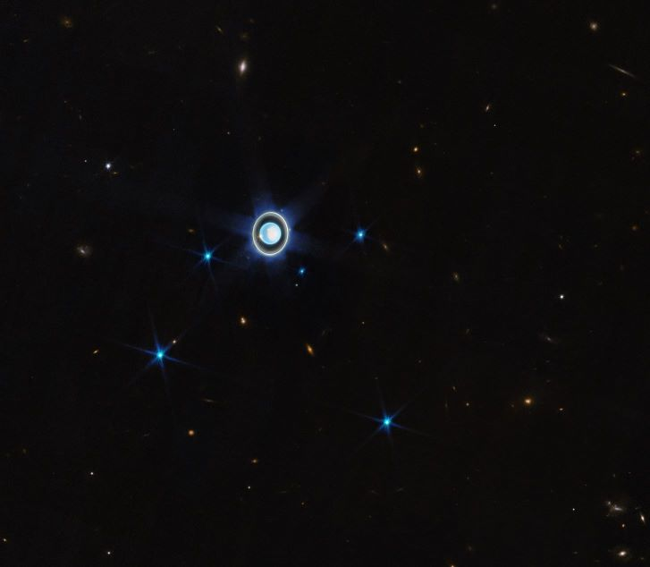

class: center, middle <!-- copy and paste down below --> # Dr. Slidelove or: How I Learned to Stop Worrying and Love the Crowds. --- ## §1 Equations KaTeX equations are supported: 1. display equations: $$\begin{aligned} E_0&=mc^2 \\\ E^2&=(mc^2)^2+(pc)^2 \end{aligned} \tag{1}$$where $c = 3 \times 10^8 \space \mathrm{m/s}$ 2. or inline equations: $\vec{F} = m \ddot{\vec{x}}$. --- ## §2 Code ```python import numpy as np import matplotlib.pyplot as plt t = np.arange(0, 10, 0.05) ``` --- ## §3 Table |_Quantity_|_Symbol_| |-|-| |Force|$\vec{F}$| |Accelaration|$\ddot{\vec{x}}$| --- ## §4 Picture  --- ### §4.1 Picture with Words |Math is a great tool!|Figure.1 The vision of the JWST</div>| |-|-| |This is a picture of the Uranian system, taken by the James Webb Space Telescope. See [_Webb scores another ringed world with new image of Uranus_](https://www.esa.int/Science_Exploration/Space_Science/Webb/Webb_scores_another_ringed_world_with_new_image_of_Uranus). It's a great achivement that we calculated the existence of Neptune by the irregular movement of Uranus, according to: $$\vec{F} = m \ddot{\vec{x}}$$.|| --- ### §4.2 Pictures Alignment for Comparison |picture|same picture| |-|-| ||| --- ## §5 Video <video controls width="600"> <source src="./assets/hyak_sm.mp4" type="video/mp4"> </video> --- ## §6 Tabsets Some content. <div class="tabset"></div> - First tab KaTeX equations are supported: 1. display equations: $$\begin{aligned} E_0&=mc^2 \\\ E^2&=(mc^2)^2+(pc)^2 \end{aligned} \tag{1}$$where $c = 3 \times 10^8 \space \mathrm{m/s}$ 2. or inline equations: $\vec{F} = m \ddot{\vec{x}}$. - Second tab <!--active--> ```python import numpy as np import matplotlib.pyplot as plt t = np.arange(0, 10, 0.05) ``` - Third tab Some tab content. <table> <tr> <th><i>Quantity</i></th> <th><i>Symbol</i></th> </tr> <tr> <td>Force</td> <td>$\vec{F}$</td> </tr> <tr> <td>Accelaration</td> <td>$\ddot{\vec{x}}$</td> </tr> </table> Some tab content. - Fourth tab The previous tabset will be ended before this comment. <!-- copy and paste till here -->